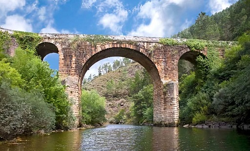
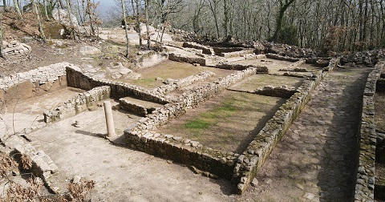

|
GALICIA ROMANA En Galicia hubo asentamientos de población desde épocas prehistóricas. Los griegos conocían a los habitantes de este extremo peninsular con el nombre de Kallaikoi. Esta región fue la más celtizada de la península Ibérica. Los romanos penetraron en
Galicia la primera vez en el año 137 a.e.c bajo el mando de Dacio Junio Bruto,
para acabar con la ayuda militar que los galaicos prestaban a los lusitanos; y
sobre todo por los intereses económicos. La provincia romana de Gallaecia, era mucho mas extensa que la Galicia actual, también comprendía el norte de Portugal, entre el Duero y el Miño, donde estaba su capital, Braga, Asturias, Cantabria y parte de lo que serían los reinos de León y Castilla. La red viaria estaba formada por diferentes vías que enlazaban las ciudades fundadas por Augusto: Bracara Augusta (Braga); Asturica Augusta (Astorga ) y Lucus Augusti (Lugo). Construyeron cuatro vías principales, que a su vez disponían de varias vías secundarias. Las vías romanas principales eran las numeradas como XVII, XVIII, XIX y XX en el Itinerario del Emperador Caracalla. Con la caída del Imperio Romano y la invasión de los pueblos germánicos, el territorio de Gallaecia forma parte de los foedus que acuerdan los diferentes pueblos invasores con Roma.
Algunos de los restos arqueológicos romanos de Galicia -Los restos Arqueológicos del Aquis Querquennis se localizan en Bande, Orense. Sus restos se han datado entre los siglos I y II. El conjunto se encuentra localizado cerca de la vía romana denominada Vía XVIII, calzada que unía Astorga y Braga. Está formado por tres elementos diferenciados: el campamento o recinto fortificado, la villa agrícola y la mansio. Ver video - Los Baños de Riocaldo se hallan en Lobios, Orense. Se conservan los restos de la Villa se ha datado entre los siglos I y IV. La villa está formada por varias dependencias entre las que destaca una vivienda. Podría ser la mansión "Aquis Ogeresibus". -La Muralla Romana de Lugo. Lucus Augusti - La Torre de Hércules en A Coruña. El único faro de origen romano, más antiguo, que está en funcionamiento. Data del siglo I. - El Puente romano de A Labrada, se localiza en el municipio de Pobra do Brollón, Lugo. Tiene dos pilares, un arco y dos semiarcos. Sobre el puente se conserva parte de la calzada romana. - El Puente romano de Éntoma se localiza en el municipio de Barco de Valedoras, Orense. Puente de un solo arco de medio punto realizado con lajas de pizarra que arranca de un paramento construido a base de grandes piedras sin labrar.
- Un Miliario romano se localiza en el municipio de Boimorto, La Coruña. Data del siglo III. De granito de 2.45 metros de altura por 0.6 metros de diámetro. Es de tipo monumental, hace referencia a la realización de la vía, tiene una inscripción. Preside la carretera asfaltada sobre la antigua vía romana enlosada.
- El Puente romano de Duarría se localiza en el municipio de Castro de Rei, Lugo. Ubicado sobre el río Vello, realizado con pizarra, con un arco de medio punto y calzada empedrada. Fue recientemente restaurado y adecentado su entorno de vegetación autóctona. En las proximidades se encuentra el castro de Duarría, en cuyo entorno aparecieron numerosos restos de época romana. En julio de 2020, una excavación saca a la luz los restos de una villa romana de los siglos I-IV. - El Puente romano de O Burgo se localiza en el municipio de Culleredo, La Coruña. De origen romano, reformado en el siglo XII. Conserva seis arcos del puente primitivo, cinco en el cauce principal. Los arcos, todos de medio punto, abren luces de unos siete u ocho metros. Restaurado en 1992, cuenta ahora con once arcos. - El Puente romano de Ponte Sampaio se localiza en la ciudad de Pontevedra. El origen de la construcción es romano, pero no conserva elementos de tal época. La estructura actual responde a la Edad Media. Construcción alargada formada por diez arcadas entre las cuales se sitúan tajamares. - El Puente romano sobre el río Deva se localiza en el municipio de Arbo, Pontevedra, sobre el río Deva bien conservado y reconocido por su importancia como punto de defensa en la Guerra de la Independencia. - Entre los municipios de Tribes y Quiroga, se localiza uno de los puentes de época romana mejor conservados de España. El puente romano de Bibei. Construido en época de Trajano, para dar paso a la Vía Nova, que unía Bracara Augusta (Braga) con Asturica Augusta (Astorga), sobre el río Bibei. El puente, de 75 m. de largo por 6,5m. de ancho, cuenta con tres arcos de medio punto y fue remodelado a finales del siglo XIX y principios del XX. En las proximidades del puente se conserva un miliario romano de época de Vespasiano, y una columna conmemorativa de época de Trajano. La estructura todavía soporta el tráfico rodado. Foto: Turismo de Ourense.

- La Vía Romana XVIII, se localiza en el municipio de San Xoán de Río, Orense. Discurre Sobre el puente Navea, de origen romano, reconstruido en la Edad Media. A la salida del puente también se conserva un tramo empedrado de calzada. A través de las fuentes clásicas como el Itinerario de Antonio se clasifica esta "Vía Nova" como la Vía XVIII del Itinerario Antonio. - Las Minas Romanas de A Médua se localiza en el municipio de Carballeda de Valedoras, Orense. Se trata de una explotación emplazada en una terraza terciaria del río Sil. La técnica de explotación empleada es la de "ruina montium"; actualmente se pueden apreciar restos de galerías, las acumulaciones de cantos rodados y las canales de lavado del mineral, "agogae" . - El Campamento Romano de Ciudadela se localiza en el municipio de Sobrado, La Coruña. Recinto de forma rectangular con las esquinas redondeadas y en el se asentaba una corte de 500 hombres, que se mantuvo desde el siglo II hasta el siglo IV. Estaba dedicado a controlaba las mercancías que iban a A Coruña y Lugo. 200 años más tarde fue recuperado por una población germánica. El sistema defensivo está formado por una muralla que lo rodea todo recinto y un foso. Además tenía dos túmulos megalíticos que eran utilizados como puestos de vigilancia. El yacimiento está excavado y algunas partes consolidadas. Los restos mejor conservados son el pretorio y tramos de la muralla. - Los Miliarios y Vía Romana de Coros de Larouco se localizan en el municipio de Pobra de Trives, Orense. Están situados junto al puente romano de Bibei, uno de ellos está dedicado a Vespasiano. La Vía Nova, que unía Braga con Astorga formaba parte de la Vía XVIII del Itinerario Antonino, levantada en época de Tito y finalizada justo en el año 80 tal y como figura en uno de los miliarios. La Vía Nova tenía un recorrido aproximado de CCXV millas romana. Es uno de los puentes de época romana mejor conservados de España. - El Puente romano de Baños de Molgas, Aqua Germinae. Se localiza en el municipio de Baños de Molías, Orense. Datado en el s.II. y en el s.XIV sufrió algunas reformas pero aun se puede ver en la parte baja del arco un amohadillado, típicamente romano. Su arco tiene 10,76 m de luz. Los pretiles y el enlosado de la calzada son fruto de las restauraciones del s.XX. - El Ara romana en Vilanova se localiza en el municipio de Pobra de Trives, Orense. Datada en el s.II. El ara está modelada con grecas en tres de sus caras superiores y posee un una inscripción cuyo desarrollo total de lectura sería:"SEVERVS,FLAVINI FIL(IVS) IOVI OP(TIMO) M(AXIMO),V(OTUM) L(IBENS) S(OLVIT) M(ERITO". - Las Columnas conmemorativas romanas se localizan en el municipio de San Xoán de Río, Orense. Son cuatro columnas que estaban ubicadas en un cruce de caminos. En dos de ellas se conservan en buen estado sus inscripciones; en ellas pueden leerse las dedicatorias: una al emperador Constantino Augusto y la otra a Flavio Claudio Juliano. Esta última, es la única columna dedicada a este emperador en la Hispania romana. - Las obras de rehabilitación de la simbólica Ponte do Pasatempo, en Mondoñedo, han dejado al descubierto restos de una calzada romana. - Las excavaciones de Reza Vella dejan al descubierto, restos romanos del siglo I, cien metros de calzada– de una posible variante de la vía XVIII del itinerario de Antonino, que comunicaba Ourense con Tui, pasando por el puente romano, tres casas de una etapa más tardía, que pueden pertenecer a los siglos III, IV o V, y varios muros, de los que se desconoce su funcionalidad, porque se encuentran parcialmente enterrados bajo la vía del tren. - La villa romana de Toralla, los castros y la fabrica de salazón en Vigo. - En septiembre de 2018, en A Guarda, descubren en Camposancos salinas romanas que no estaban catalogadas. - Una excavación en Proendos, octubre 2020, saca a la luz restos arqueológicos de este yacimiento. En la zona, declarada de Bien de Interés Cultural, se ha detectado la existencia de un complejo termal, estructuras funerarias y un posible foso defensivo. - En noviembre de 2020, en Lugo, encuentran parte de una casa romana con su sistema de calefacción. Las obras de Quiroga Ballesteros han destapado el hallazgo arqueológico, del siglo I. - Los restos arqueológicos en la Pedra do Altar de Brandomil, Zas. En las excavaciones arqueológicas realizadas en la finca de Pedra do Altar fueron descubiertas varias estructuras altoimperiales del siglo I, entre las que se encuentran una Vía Romana, una construcción con tres estancias y un pavimento que probablemente se corresponda con una plaza o una calle de la época. - El castro Sarridal, Cedeira. Habitado durante casi mil años, desde los siglos III o IV a.e.c, hasta el siglo IV o V .Dos etapas diferenciadas, la castrexa y a galaico-romana. Desde 2017, tienen lugar cada año campañas arqueológicas. Destaca el monumento con horno, una construcción castreña dedicada a los baños de vapor con una compleja y rica arquitectura. Las murallas defensivas, un cuchillo y hasta una moneda de Vibia Sabina, la esposa del emperador romano Adriano. - En abril de 2022, encuentran restos de un asentamiento poblacional romano en la isla de Ons. Un complejo industrial romano para fabricar púrpura y salazones. Los trabajos de excavación han permitido desenterrar restos de un conjunto industrial y estructuras residenciales, así como muchos utensilios, aparatos e incluso monedas. En la isla se conocía la existencia de una antigua fábrica de salazón. - En mayo 2022 en Ortigueira, en la excavación de una finca privada al pie del paseo de la playa de A Concha, aparecen cuatro piletas y parte del patio, en el yacimiento que ya había excavado el arqueólogo Federico Maciñeira en 1907. - En Allariz destaca la ciudad romana de Armea. Junto a un ramal de la Vía XVIII Nova que luego durante la Edad Media fue utilizada por los peregrinos del Camino de Santiago. Se aprecian viviendas completas, las calles aparecen enlosadas. Foto: www.metropolitano.gal

|